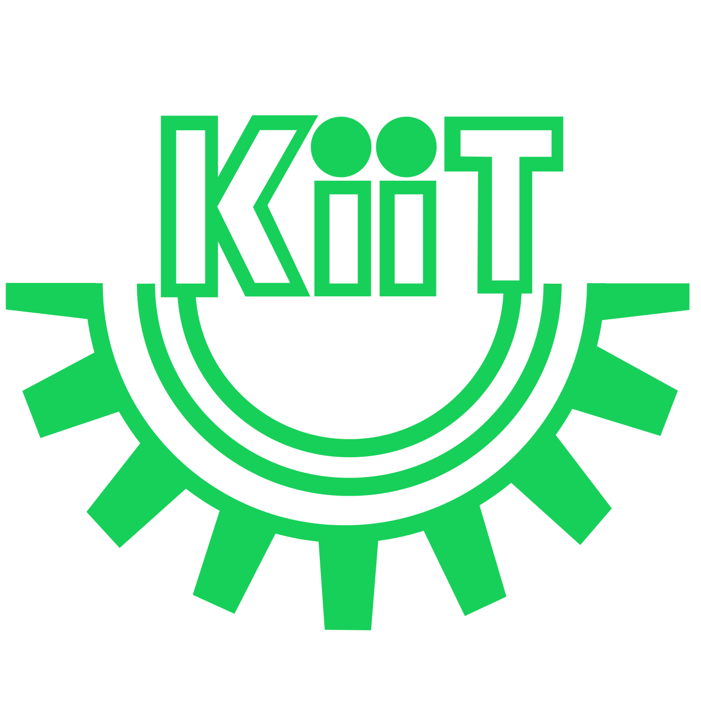

Hello, world! I'm a developer and coder.
=> "Bangalore, India"
> Saswat.education
=> "Kalinga Institute of Industrial Technology"
> Saswat.major
=> "Computer Science"
> Saswat.graduated
=> "May 2013"
> Saswat.interests
=> ["Design", "Code", "coffee", "photoshop", "music"]
> Saswat.workExperience.latest
=> Latest Work Experience
company: "QUIKR"
role: "Software Development Engineer"
startDate: "Jan 2016"
> Saswat.resume
=> "saswatarabinda.pdf"
> Saswat.email
=> "arabindasaswat@gmail.com"
Resume
Work Experience
CommonFloor
Mar 2015 - Jan 2016
Software Development Engineer 1
Bangalore, India
Involved in developing responsive web applications as well as mobile apps using latest technologies, for key portal features. Took end to end ownership of the Guide functionality. Also involved in team management, with responsibilities such as resource and task allocation.
Roles and Responsibilities:
- Created Responsive user interface for listing user’s property using Bootstrap
- Used ReactJS to create modular and reusable component for the user interface
- Completed various development task using jQuery
- Integrated 3rd party technologies such as WebEngage, CrazyEgg and Google Analytics for enhancing user experience
- Used principles of SEO recommendation to optimize web pages
MAQ Software
Dec 2013 - Feb 2015
Software Engineer
Hyderabad, India
Worked as a software developer on challenging projects which involved using Microsoft SharePoint and other related Microsoft products and working in cross-teams as well. The projects involved developing web based applications as well as mobile apps.
Roles and Responsibilities:
- Designing and Developing User Interface with technologies such as HTML5, CSS3 and JavaScript
- Created Responsive user interface
- Designed and developed Search App using SharePoint Search Enterprise 2013
- Developed user-friendly error handling and validations using C#
- Used developer tools such as Team Foundation Server (TFS) and CodeLook for collaborative development
- Implemented server side security for preventing cross site scripting (XSS)
- Experienced with Agile or scrum development methodst
Internship
College management system
Oct 2012 - Mar 2013
KIIT University
Bhubaneswar, India
Designed Responsive User Interface (webpages) and performed client side validation using JavaScript.
PHPHTML5JavaScript CSS 3ApacheMySQL databaseDreamweaverWAMP server
The Vehicle Routing Problem
May 2012 - July 2012
IIT Kharagpur
Kharagpur, India
The vehicle routing problem (VRP) is a combinatorial optimization and integer programming problem seeking to service a number of customers with a fleet of vehicles, such that it has minimum total travel cost and maximum customer service in.
Guide - Prof.Mamata Jenamani, Department of Industrial Engineering & Management, IIT Kharagpur
Test Case Generation for a Concurrent System using UML Activity Diagram
May 2012 - July 2012
KIIT University
This project involved presenting an approach of generating test cases for concurrent systems using UML Activity diagram. In this work we have presented an approach for generating a minimum test suite with maximum coverage
Guide - Dr. Arup A. Acharya, Department of Computer Science, KIIT University